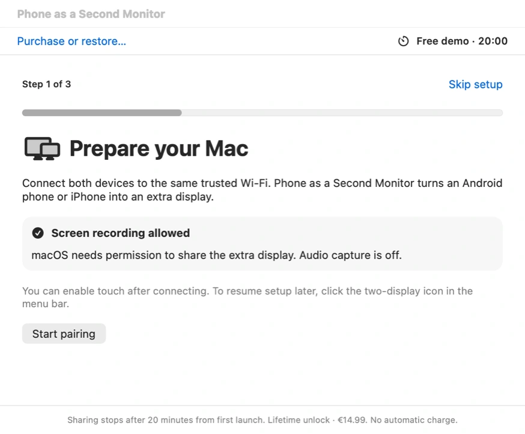
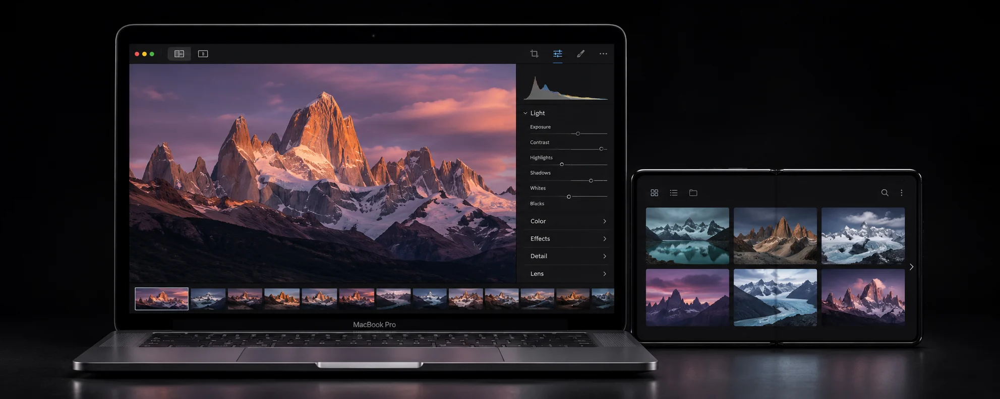
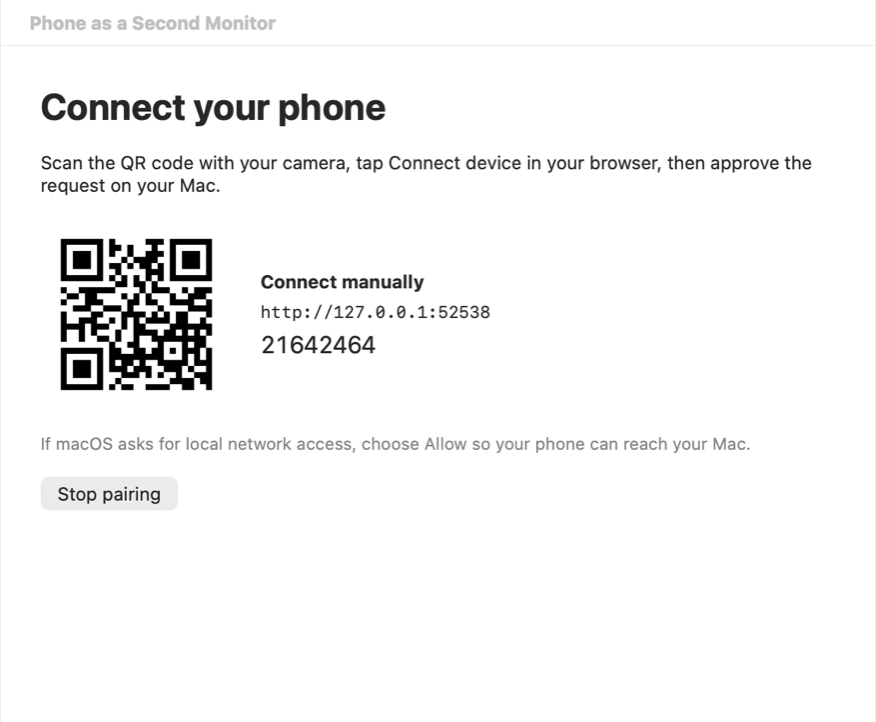

Start on your Mac.
Open the menu bar app and allow Screen Recording so your phone can show the extra display. The timer at the top right shows how much demo time you have left.
Help with permissions
Give a window its own screen. Move notes, chat or reference photos from your computer to a spare iPhone or Android over Wi-Fi.
20-minute free demo·No card needed·macOS 13+ or Windows x64

App preview
Open the menu bar app and allow Screen Recording so your phone can show the extra display. The timer at the top right shows how much demo time you have left.
Help with permissions
Join the same Wi-Fi network, then scan the Mac’s QR code with your phone. Approve the connection on your Mac. Everything on the phone runs in its browser.
Pairing help
Drag a window past the edge of your Mac display to put it on your phone. Try moving the shot list between the screens in this preview.
Enable touch control and allow Accessibility on the Mac. Use the chevron on your phone to bring up the keyboard, right-click or open the Dock.
Pricing
Have your phone nearby when you first open the desktop app. That’s when your 20 minutes begin.
All display and touch features
One-time purchase
The demo ends without a charge. Unlock lifetime access in the desktop app whenever you’re ready.
macOS 13 or later · Windows 10 22H2 or Windows 11 on Intel or AMD x64
Install the desktop app on a Mac running macOS 13 or later, or try the Windows preview on Windows 10 22H2 or Windows 11 with an Intel or AMD x64 processor. Your iPhone or Android connects through its browser on the same trusted Wi-Fi network. See the Windows setup guide.
Yes. Your phone extends the Mac desktop. Leave a document on the phone and keep working in a different window on the Mac.
The countdown starts the first time you open the app and continues if you close it or disconnect your phone. When time runs out, sharing stops and the desktop app shows the lifetime unlock screen.
Display frames and input travel directly between the computer and phone over your local network. The website edition uses the internet for purchases and license checks. Read our privacy policy for details.
Yes. Allow Accessibility on the Mac and enable touch control in the app. Open the phone’s edge menu to show the keyboard or select Right-click for the next tap.